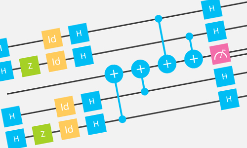
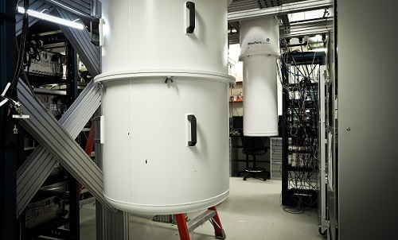

Introducing the IBM Quantum Experience, the world’s first quantum computing platform delivered via the IBM Cloud.
We are at the beginning of a new chapter in the information revolution. Up until now, this revolution has unfolded based almost entirely on what a physicist would call a classical model of information. This is now known to be too narrow. Breaking out into a fully quantum theory and technology of information processing will enable us to perform some computations that would take more than the age of the universe to do on a classical computer; and to process information in other ways that are so new and different that they cannot even be properly described, let alone performed, within the classical model.
The IBM Quantum Experience represents the birth of quantum cloud computing, offering students, researchers, and general science enthusiasts hands-on access to IBM’s experimental cloud-enabled quantum computing platform, and allowing users to run algorithms and experiments, work with quantum bits (qubits), and explore tutorials and simulations around what might be possible with quantum computing.
The results of more than 35 years of IBM Quantum Computing research are now available for exploration at the click of a button. Join us to help accelerate innovation in the quantum field, and help discover new applications for this technology.
Explore the IBM Quantum Experience
The IBM Quantum Experience is a virtual lab where you can design and run your own algorithms through the cloud on real quantum processors located in the IBM Quantum Lab at the Thomas J Watson Research Center in Yorktown Heights, NY.
Learn about Quantum Computing
The IBM Quantum Experience offers tutorials for quantum computing beginners and experts, alike.
Introducing the IBM Research Frontiers Institute
IBM’s quantum computing platform is a core initiative within the newly formed IBM Research Frontiers Institute, a consortium that develops and shares ground-breaking computing technologies to spur world-changing innovations.
Careers in IBM Research
Join the IBM Quantum Computing Team
IBM's Quantum Computing team is charting the future of quantum information sciences and looking for the next generation of thinkers to join them in their quest to build a universal quantum computer.
More about IBM Quantum Computing

Demo: IBM Quantum Experience
Watch a demo of how to use the world’s first quantum computing platform delivered via the IBM Cloud.
Quantum Computing on the Cloud
Hear from IBM experts about the new cloud-enabled quantum computing platform.

IBM Quantum Computing Lab Tour
Explore a 360 degree look at the IBM Quantum Computing Lab at the Thomas J Watson Research Center.